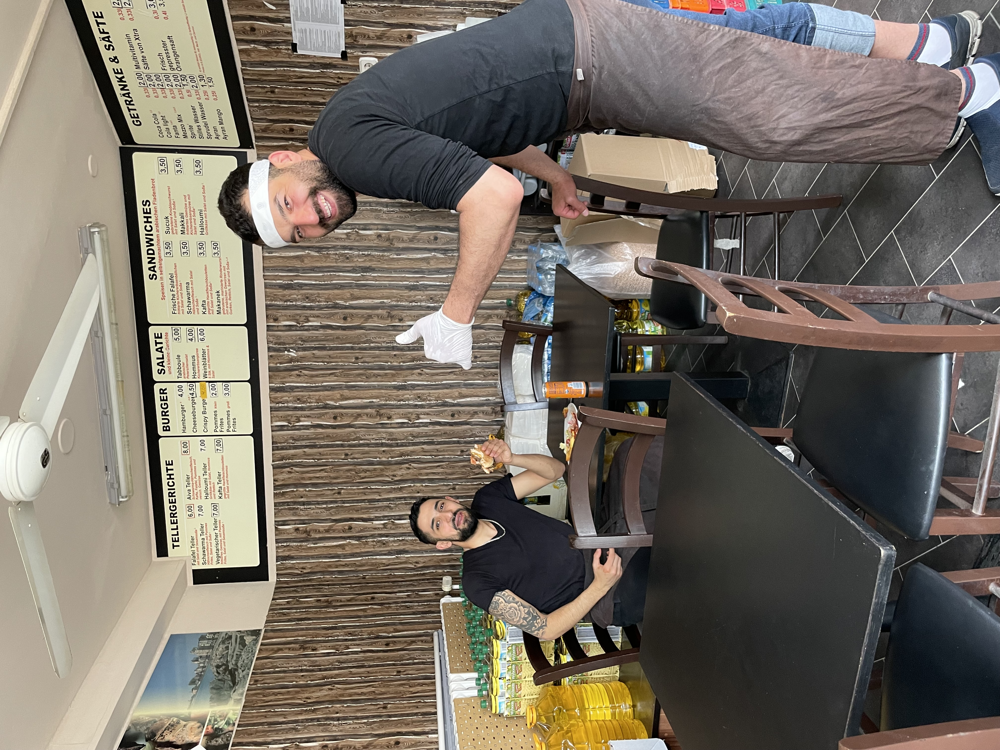
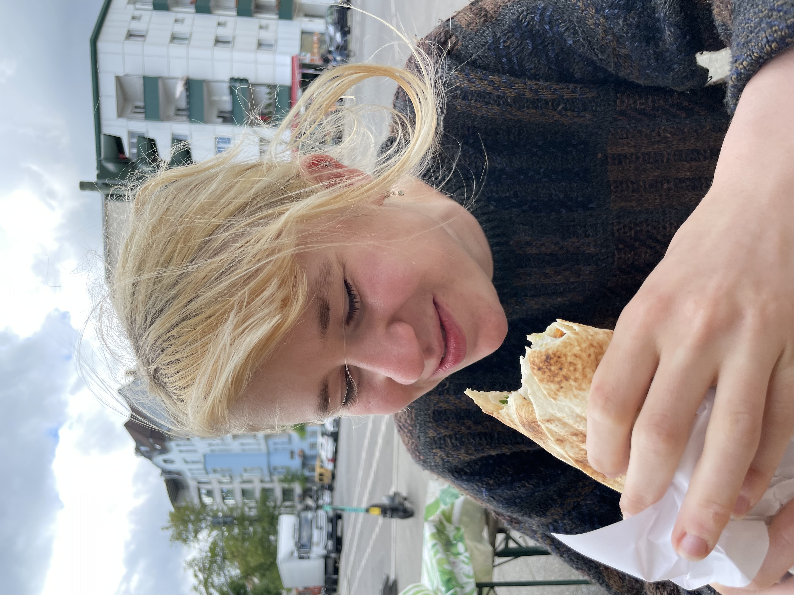
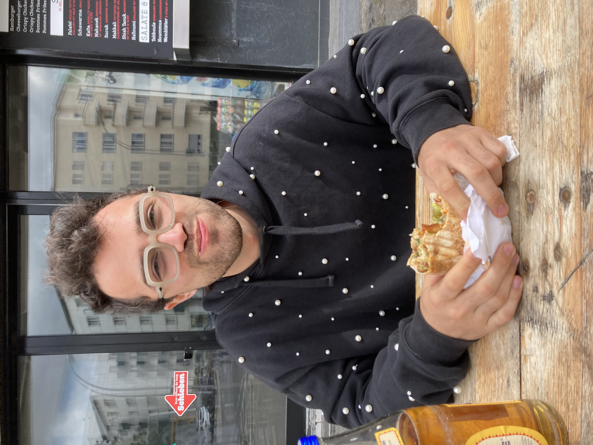
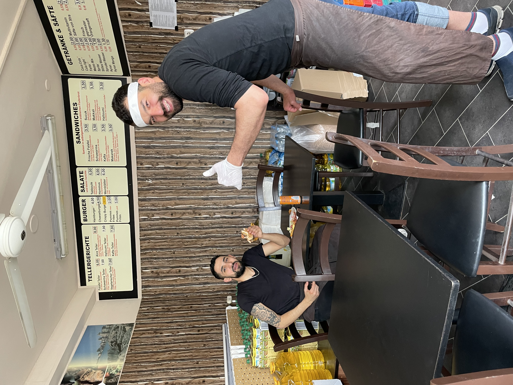
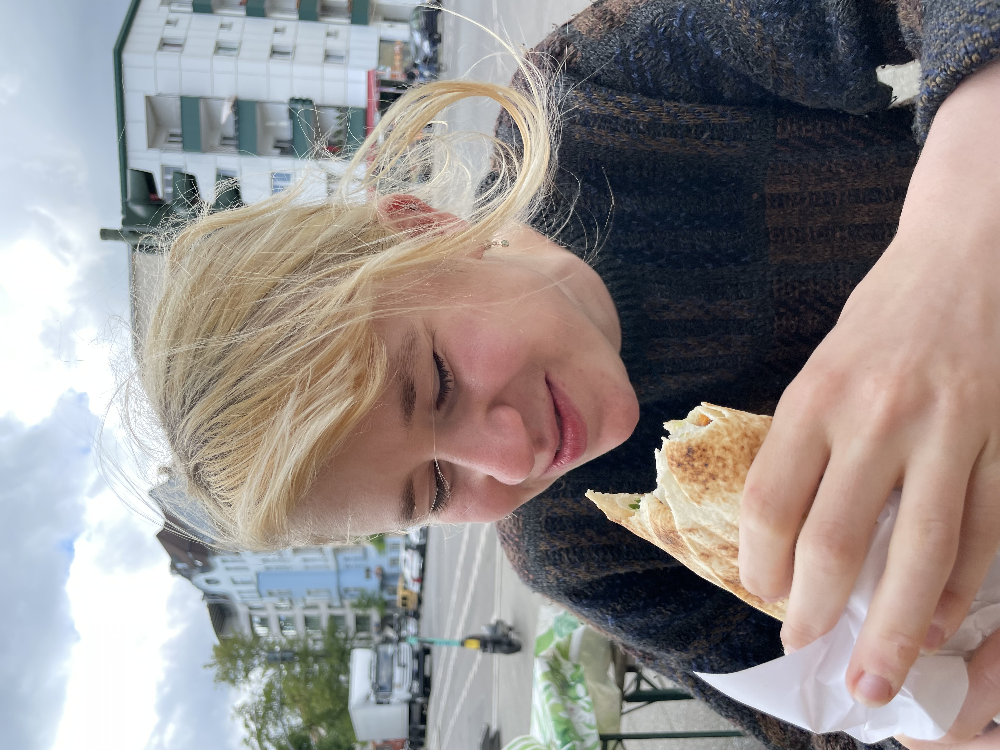
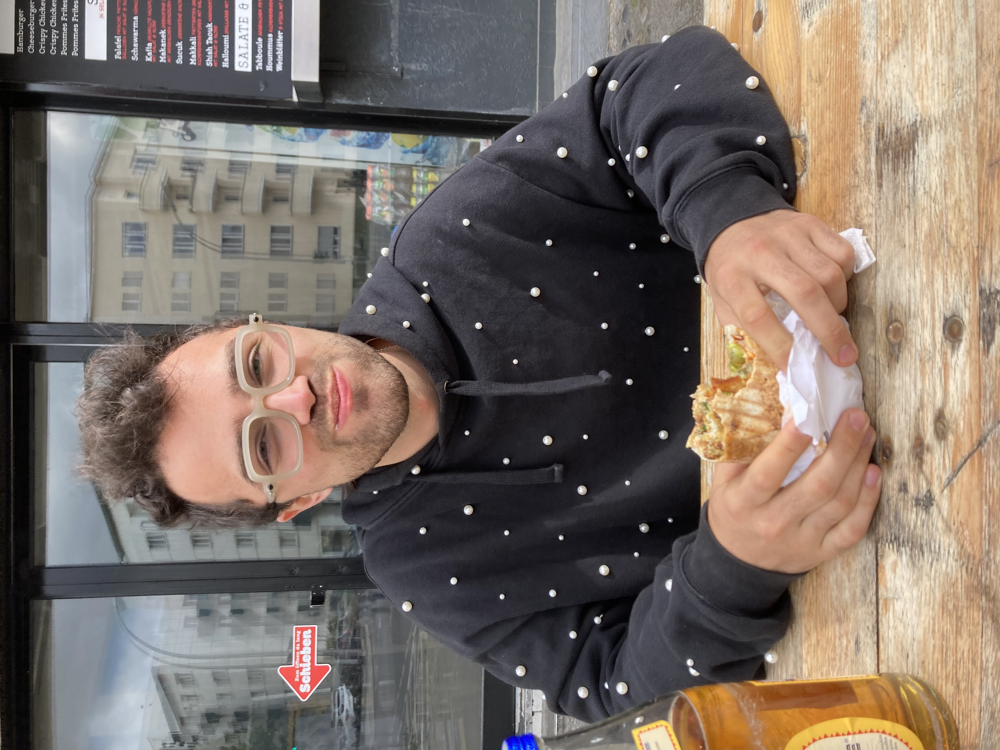

Falafel Atlas
Hello and Welcome to the Falafel Atlas
This is my diary of all the Falafel Restaurants I visit. Many of them are in Berlin,
but every now and then I get to eat Falafel elsewhere in the world. In the domain of
Falafel, my main expertise lies in critiquing Falafel sandwiches and wraps, but I
also enjoy eating falafel plates. Of course, other dishes that are often available at
Falafel Places are also very dear to me, but I don't want this to turn into a food
blog. If there is a Falafel place you think I should visit, please send me an email
to friedrich.wicke@protonmail.com.
This Website is run by Frido, my personal website is frido.ai
Falafel Places in Berlin
Aiva, Berlin Charlottenburg
Aiva was the place I had great falafel for the first time in my life (almost four years
ago) and it is still my favorite. It is and probably forever will be the place, where I
had the most falafel sandwiches. Throughout the first three years that I lived in Berlin,
I would often go weeks eating three or more sandwiches from Aiva every day.
 I feel like I could write books about the qualities of this place, but let me save myself
the embarrassment and you the trouble of reading and just tell you this: This place is
perfect. Super kind people, incredible food, great prices, the best around-the-corner
falafel place one could possibly wish for. Also, ask for extra pickles if you're into that
kind of stuff.

The picture on the left shows the two most lovely falafel-makers in Berlin. The picture in
the middle shows Marie enjoying the best falafel she ever had. The picture on the right
shows Frido being at his happiest, eating his favorite falafel sandwich, enjoying the
moment while also feeling a deep connection to his own past.
I feel like I could write books about the qualities of this place, but let me save myself
the embarrassment and you the trouble of reading and just tell you this: This place is
perfect. Super kind people, incredible food, great prices, the best around-the-corner
falafel place one could possibly wish for. Also, ask for extra pickles if you're into that
kind of stuff.

The picture on the left shows the two most lovely falafel-makers in Berlin. The picture in
the middle shows Marie enjoying the best falafel she ever had. The picture on the right
shows Frido being at his happiest, eating his favorite falafel sandwich, enjoying the
moment while also feeling a deep connection to his own past.